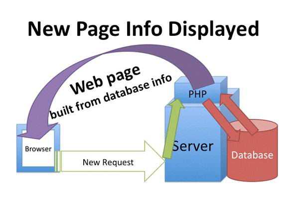
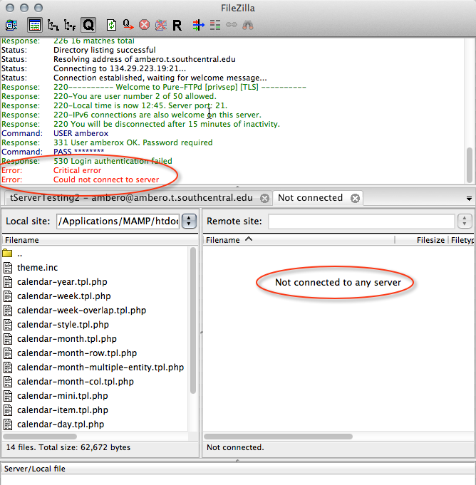
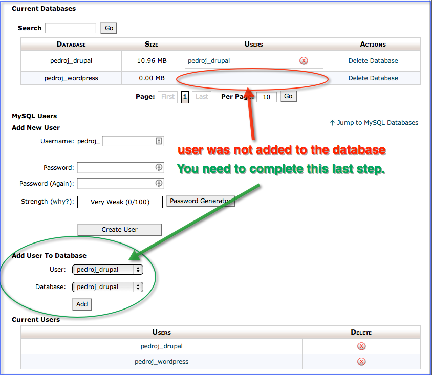
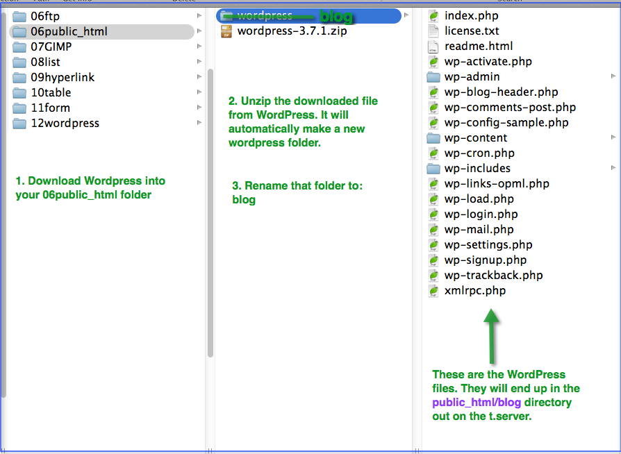
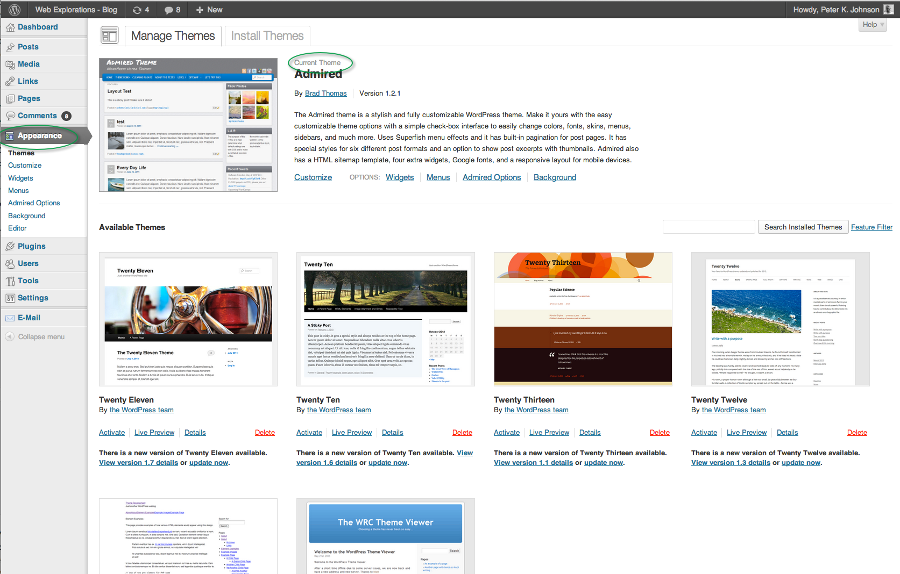

Wordpress |
|
Instant websites! |

In this module you will learn:
Use a Content Management System (CMS) to create a dynamic web site.
- Describe what a blog is and how they can be useful to an organization.
- Create a new MySQL database on a web server using cPanel.
- Install a CMS such as Wordpress on a web server
- Change the appearance of the CMS using pre-written themes
- Customize a theme using CSS
- Add at least three modules to increase the capabilities of the CMS.
Important: This module uses LOTS of logins. Use the Site Organizer sheet (originally introduced in the FTP module) to keep track of them:
- Login information to access the cPanel out on your t.server
- URL and port number for cPanel
- User ID and password for cPanel
- Special notes (answering the security warnings)
- Login information to access FTP out on your t.server.
- URL to FTP part of the website.
- User ID and password
- Special notes (make certain you are in the public_html)
- Database name, database user, database password for your Wordpress data. (Wordpress will require this information so it can access the tables in the mySQL database on the server.)
- Full name of the database (will have your username prefix)
- Full user name (wll have your username prefix)
- Password for the database
- Wordpress admin login
- URL to Wordpress admin
- User ID and password for the Wordpress site.
Print the information carefully. Put a slash through zeros (so they don't look like the letter "o") and underline capital letters with three lines.
Don't just write down the login information, label it! So many students just scribble down the login info and then get confused on which login in is used for which purpose. Stay neat and organized and it will really save you a lot of time and stress.
WII-FM (What's In It - For Me)
So your uncle wants a web site...
This module will show you how to use a popular blog framework, Wordpress, and your knowledge of HTML5 and CSS3 to quickly create web sites that your uncle, brother, or client can use and update on their own.
Save your time and energy for the more sophisticated work on client sites and leave the tedium of data entry and updating calendars to the client.
For this module you will be downloading a copy of Wordpress and installing it on your t.server.
Complete these Learning Activities:
Total estimated time for this module: 6 hours.

There are two parts involved. (1) What the user sees and (2) A form that the editor or site administrator uses to add new content to the database.
Estimated Time: 15 minutes
Work through the tutorial: How a CMS works
Watch this video to learn how to access the cPanel (Control Panel) on the t.server.
You will be using the cPanel to create a new database that Wordpress will use to store all its information.
If you plan on taking other classes for the Information Systems degree you will be using the cPanel a lot so keep this information handy for your account. (ie put it into LastPass.)
Make certain you write down this information so you can access the cPanel whenever you need to.
- The URL or web address to the cPanel
- Your userID
- Your password
Use this lab worksheet as a guide to help you login into cPanel
Estimated Time: 30 minutes
Watch this video to learn how to access the cPanel (Control Panel) on the t.server.
Watch this video to learn the three steps to creating a database on the t.server. You need to follow these steps exactly and in order.
Make certain you write down (and label):
- The full name of the database
- The full name of the database username
- The database password you use.
Estimated Time: 30 minutes
Watch this video to learn the three steps to creating a database on the t.server.
Watch this video to learn how to install Wordpress.
Write down and label the following bits of information and label them:
- The URL or web address to your copy of Wordpress
- Your Wordpress administrator user name
- Your Wordpress administrator password
Where do you want your Wordpress blog to appear?
You can learn how to set up a static front page on Wordpress. This will allow you to copy and paste the HTML code from your existing homepage into the Wordpress editing area. (Not your menus, just the body copy).
If you want your blog to be part of your website but not your homepage, then put all the Wordpress files (NOT the Wordpress folder itself, just the files) in a subdirectory. For example 06public_html/blog as well as public_html/blog out on your t.server.
If you want Wordpress to be the home page of your site put all the Wordpress files in your root directory. (06public_html and public_html out on the t.server)
IMPORTANT! Make a backup copy of your 06public_html. You might name it 06public_htmlBACKUP. That way you can always go back to your current website if you need/want to.
Estimated Time: 30 minutes
Watch this video to learn how to install Wordpress.

-
If you are using your laptop on campus, the wireless network has a firewall that will keep you from accessing your t.server. You'll have to use one of the lab computers to access your files with FileZilla. At home this won't be a problem, just on campus.
-
Often the database doesn't get connected with the user.

Go back into the cPanel and look at the table near the top of the database page. You should see the name of the database as well as the user name. If the user name is blank, go down to the bottom of the page and connect the database with the username again. You should see a permissions page. Select All on that page and click okay.
-

Wordpress does not display. (Confused about which folder goes where?) When you unzipped the Wordpress file you may end up with a folder inside a folder. That's okay, just make sure the folder you rename to "blog" is the folder that contains the WP-files. That is the folder (and the files it contains) that you will upload to the public_html folder out on the t.server.
- File Not Found when trying to view Wordpress If you name the folder "Blog" and then try to view Wordpress out on the server using yourusername.t.southcentral.edu/blog, then you will get a "File Not Found" error. Go back and follow the naming conventions and name your files and folders consistently. (start with lower case, useCamelCaseForMultipleWords, no spaces.)
Read over this checklist (view details of this checklist) if you are having trouble.
Having problems?
Read the Wordpress FAQ (Frequently Asked Questions) about Wordpress installation issues students have had.
Here's how to uninstall Wordpress so you can start over. Using phpMyAdmin to remove all the information from the database.Before you re-install Wordpress you need to remove all the information from the database using phpMyAdmin (located out on the cPanel) as delete all the Wordpress files in the folder named "blog".
Still broken? Go back out to http://Wordpress.org and re-download the original file, delete the files out on t.server and re-upload, and empty out the database tables. This will allow you to re-install starting from scratch.
Enable Askimet anti-spam protection..
If you don't protect against spammers, they will attack your site and fill every blog posting with comments that point to other sites completely unrelated to your website. It is a very boring and time-consuming task to go in and delete all of these comments from a long list of blog postings.
Estimated Time: 30 minutes (Depending on how much time you spend browsing through all the plug-ins. Best to search for a specific topic/task and then pick the one with the highest rating.)
OPTIONAL: Use the Wordpress.org documentation
Here is a written checklist that you might find helpful: Peter's Wordpress FAQ
After you get Wordpress up and running, create a new user with Admin rights using your t.server username/password. This is like having a spare set of keys for your car. If you forget your admin userid/passwords you will have to re-install Wordpress from scratch.
Estimated Time: 30 minutes
OPTIONAL: Use the Wordpress.org documentation.

Here is a Wordpress information page on themes and how to install them quickly and easily out on your server.
Here is a screenshot from Web Explorations showing the various themes that have been installed, ready to use. (Click on the graphic for a larger view.)
Estimated Time: 15-30 minutes depending on how much time you spend browsing through all the themes. (Careful! It can really be a time suck.)
Choose two or three themes from the Theme Directory.
Create your own Wordpress theme from scratch using this tutorial from Chris Spooner.
Download a base or starter theme. Download the zip file and unzip it inside your theme folder on your flash drive. Then upload it to the same folder out on your t.server in the folder wp-content/themes.
Here are three to get you started:
- The Whiteboard Theme - A great place to start with great documentation.
- The H5 Theme - A theme that is more business oriented and less blog-looking. The download button is in the upper right corner of the page.
- Here is a list of other bare-bones themes to get you started. There are more listed in the comments.
Estimated Time: 2 hours
OPTIONAL: Customize an existing theme by using this Wordpress guide.
Here's an online theme generator written by Yvos Chaap that you can use to build a custom theme for Wordpress. Using your knowledge of CSS you can then fine tune the theme to your needs.
Do a web search for: wordpress theme customize.
Estimated Time: Minimum of 1 hour. You can spend days fine-tuning a theme.
OPTIONAL: Add plugin modules to your Wordpress installation for more capabilities.
Don't go crazy though. Do one at a time and test it out for awhile before adding more.
Estimated Time: 30 minutes (Depending on how much time you spend browsing through all the plug-ins. Best to search for a specific topic/task and then pick the one with the highest rating.)
OPTIONAL:Add plugin modules to your Wordpress installation for more capabilities.
OPTIONAL: You can install WordPress on your own computer using a webserver that is called localhost.
Here is a checklist highlighting the steps.
Estimated Time: 30 min.
OPTIONAL: Wonder what makes WordPress work? Here are some demo files to show you how PHP works.
Here is a PHPDemo.zip.
What's Next?
- Learn more about PHP (Web Programming)
- Going beyond WordPress: Drupal
- Want to do more programming? Start exploring Java
Estimated Time: 1 hour
Your Graded Assignments For This Module
Take the Graded Quiz: Form
- There will be 10 true/false and multiple choice questions.
- 10 questions - 10 minutes - 10 points
- Feel free to use your book or look stuff up on the Web or try things out on your computer.
- You will have one chance to take the quiz.
- The questions will be from the same database that the self-quiz uses.
- The quiz will be scored automatically and your points shown in your D2L grade book.
Estimated Time: 10 minutes
Look on the Course Map for the due date for this graded activity.
 Begin work on the Project: Wordpress
Begin work on the Project: Wordpress

Your Tip-Of-The-Week
(Click on the lightbulb to reveal the tip.)
Tip of the Week:

Want to learn more about WordPress?
Check out Smashing WordPress
Smashing WordPress shows you how to utilize the power of the WordPress platform, and provides a creative spark to help you build WordPress-powered sites that go beyond the obvious.
You will learn the core concepts used to post types, the admin bar, and lots of other useful new features.
Inside, WordPress expert Thord Daniel Hedengren takes you beyond the blog and shows you how WordPress can serve as a
- CMS
- a photo gallery
- e-commerce site
- and more.
Congratulations!
You have completed this course and can now use HTML and CSS fluently.
You should also have your own website that you can continue to add to and enhance. And, if you purchased your own domain name and hosting you now have your own little piece of the Web.
Good job!